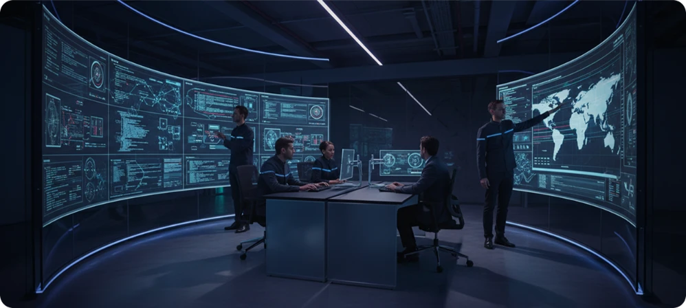

Next-Gen Multi-Cloud Orchestration at Hyper-Scale.


.webp)
Insights and architectural strategies straight from Stackly’s production environments and specialized FinOps units.

Many technical organizations attempt to scale back compute costs by simply downsizing instances. Without mapping microservice dependency loops and memory peak profiles, you're merely trade-offing safety margins for latency spikes.
 FINOPS
FINOPS
How enterprise engineering leaders bridge the divide between AWS billing dashboards and Kubernetes pod-level resource allocation.
 MIGRATION
MIGRATION
A field manual on bidirectional CDC replication, cutover sequencing, and rollback topologies across heterogeneous cloud regions.
COMPLIANCE
Enforcing non-bypassable cryptographic provenance, ephemeral workload verification, and real-time posture scanning across clusters.
 OBSERVABILITY
OBSERVABILITY
Techniques for adaptive head- and tail-based sampling in microservices operating at millions of requests per second.
Our complete collection of engineering telemetry, infrastructure guides, and case studies.
An architectural review of distributed tracing with eBPF agents, detailing telemetry collection patterns that minimize trace payload overhead on high-frequency transactions.
A case study detailing automated autoscaling triggers based on network transaction cycles rather than bare system CPU averages, reclaiming over 40% in waste spend.
We weigh active-active cloud setups against the high operational complexity of independent platforms. Read our deployment guide for localized, self-contained landing spots.
Step-by-step infrastructure architectures built and benchmarked for high-throughput cloud clusters.
 TRACING
TRACING
Capturing distributed network tracepoints without intrusive sidecar pods to eliminate CPU scheduling overhead on high-throughput microservices.
.webp) NETWORKING
NETWORKING
An operational review of deploying dynamic BGP mesh routing across AWS, GCP, and bare-metal datacenters with automated link failover.

LOW LATENCYPreventing stale read states across transatlantic cache clusters using vector clocks and conflict-free replicated data types (CRDTs).
Verified production metrics and battle-tested incident checklists from high-scale customer deployments.
Safe dual-write replication patterns for enterprise Postgres under steady-state customer loads.
.webp) 99.999% SLA
99.999% SLA
Automated partition healing and Raft cluster re-balancing during network splits.
12s Rollback
Using Prometheus metric analysis for autonomous canary validation and millisecond rollbacks.
Predictive instance bin-packing and graceful termination handlers that slashed compute costs.
Continuous cryptographic validation, runtime container protection, and automated governance guardrails.
Eliminating manual quarterly screenshots with automated infrastructure evidence collection in Terraform.
Read Implementation.webp)
Deploying ephemeral mutual TLS encryption and sub-millisecond crypto key exchange across multi-cloud VPCs.
Read Implementation
Intercepting privilege escalation and anomalous socket connections directly at the OS boundary before escape.
Read Implementation
Granular container-level billing attribution across engineering squads with predictive cloud overspend alerts.
Read Implementation
A production checklist for migrating relational database clusters safely under steady-state customer loads without read performance degradation.
How to deploy open-source agents to allocate exact cloud costs down to individual Kubernetes namespaces, workloads, and developer environments.

Stop collecting screenshots manually every quarter. Build compliance controls directly into your Terraform landing zones and automated policies.
Eliminating distributed tracing bottlenecks with intelligent tail-sampling and kernel-level trace aggregation during sudden network load spikes.
Architecting zero-trust perimeter segmentation with wireguard overlays and automated credential exchange across enterprise cloud environments.
Catching privilege escalation and anomalous socket connections directly at the OS boundary before container sandboxes are breached.
No marketing fluff. Unfiltered cloud post-mortems, real operations runbooks, and direct architecture teardowns sent straight to your inbox once a fortnight.